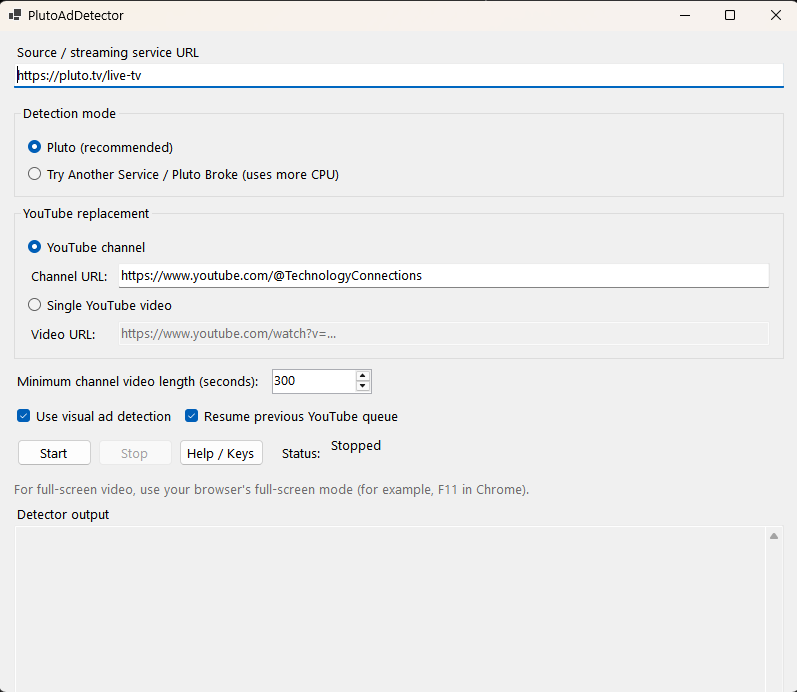

Use the DOM when the DOM already knows
Visual matching is useful, but the cheap service-specific signal stays the primary detector when it is available.
projects/pluto-ad-detector
An experimental Windows app that watches a streaming page for ad breaks and recurring visual bumpers, switches to something I actually want to watch on YouTube, then puts the original stream back when normal programming returns.
.NET 10 · WinForms · Playwright · Chrome · YouTube IFrame API · perceptual fingerprints
I got tired of seeing the same Pluto TV ads over and over, especially during U.S. midterm-election season. At some point the obvious question became: what if I could just watch the news during the ad breaks instead?
That became the entire premise. Pluto keeps playing in its own browser tab. When an ad starts, the app mutes the source and brings a local YouTube player forward. When the ad ends, YouTube pauses, Pluto comes back, and the source is unmuted.
My normal replacement content is long-form news from YouTube, so the useful version of the idea was not "play a random clip." It needed to remember a queue and let me keep picking up where I left off across a bunch of short ad breaks.

The original version watched Pluto's page for a visible DOM ad indicator. That is still the preferred path because it is cheap, deterministic, and directly tied to what the streaming UI is already telling the viewer.
The detector is debounced so a single noisy DOM mutation does not constantly flip the source and YouTube tabs back and forth. Pluto mode stays focused on the known page structure, while a broader full-page mode exists for experimenting with other services when the Pluto-specific path is not appropriate.
I have confirmed that broader mode works at least partially with Tubi, and I may add explicit support for other services I actually use rather than trying to turn the project into a universal streaming-site framework.
DOM detection cannot catch everything. Streaming services also have bumpers, promos, station cards, and other repeated segments that may look exactly like something I want to skip while never being marked as an ad by the page.
The visual detector handles that case. Training samples the decoded source video for a short period, normalizes the frames in memory, and stores an ordered sequence of compact perceptual fingerprints. It does not save the training video or screenshots.
During playback, the detector periodically samples the source again and looks for a sequence sufficiently similar to the trained reference. Matching is intentionally tolerant of sampling jitter, skipped reference frames, and isolated mismatches rather than expecting every frame to line up exactly.
A visual match can temporarily hide and mute the source and resume YouTube before Pluto's normal ad UI appears. If the regular DOM detector confirms an ad soon afterward, that detector takes over. If it does not, the visual block times out and the app restores the source instead of blindly assuming the entire program has become an ad.
It is useful for recurring bumpers and promos, not a magic classifier that understands arbitrary video.
The replacement player can use one specific YouTube video, but the more useful mode builds a queue from a channel. My own use case is watching news during Pluto breaks rather than restarting the same clip every time.
Channel mode discovers videos, filters out unsuitable live/upcoming content, rejects videos below a configurable minimum length, and keeps the queue bounded. When one video finishes, the next becomes current.
The queue is also saved periodically with the current video and playback position. On a later run, the app can restore a compatible recent queue and continue from roughly where I left off instead of rebuilding the entire viewing state from scratch.
PlutoAdDetector drives a headed browser through Playwright. Installed Google Chrome is preferred, with Playwright Chromium as a fallback.
It uses its own persistent browser profile rather than touching my normal Chrome profile. That keeps the automated streaming session separate from ordinary browsing while still allowing the source page to behave like a real interactive browser tab.
Visual matching is useful, but the cheap service-specific signal stays the primary detector when it is available.
A trained bumper can trigger an early switch, but if a real ad does not follow soon enough the app restores normal programming.
Automation gets its own persistent browser profile instead of borrowing credentials and state from my everyday Chrome profile.
The YouTube side keeps queue and playback state because ad breaks are interruptions, not separate viewing sessions.
PlutoAdDetector is heavily AI-assisted. So is ReaperShell. I still made the design decisions, tested the behavior, changed the architecture as the project grew, and kept the parts that actually worked.
The README version is shorter: AI-assisted slop. Unfortunately, it works.
PlutoAdDetector is the first project in this collection where I have published a compiled application as an actual GitHub Release rather than expecting somebody to clone the repository and build it themselves.
The Windows release includes the GUI, detector, and .NET runtime. The normal path is intentionally mundane: extract the archive, have Chrome installed, run the GUI, choose the source and YouTube replacement, and press Start.
PlutoAdDetector works for the thing I built it for and I actively use it with Pluto TV. The broader detector has also worked at least partially with Tubi, which makes explicit support for other services plausible if I end up using them enough to care.
For now it is still an experimental personal tool that happens to be packaged well enough for somebody else to download and try.